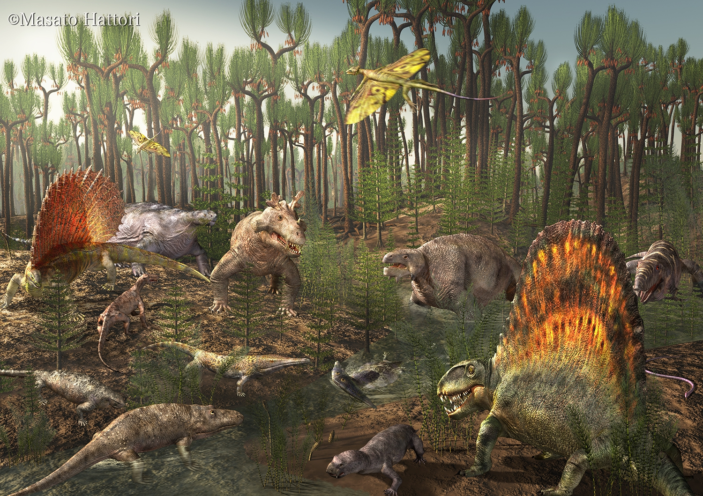

The Permian period lasted from 299 to 251 million years ago* and was the last period of the Paleozoic Era. The distinction between the Paleozoic and the Mesozoic is made at the end of the Permian in recognition of the largest mass extinction recorded in the history of life on Earth. It affected many groups of organisms in many different environments, but it affected marine communities the most by far, causing the extinction of most of the marine invertebrates of the time. Some groups survived the Permian mass extinction in greatly diminished numbers, but they never again reached the ecological dominance they once had, clearing the way for another group of sea life. On land, a relatively smaller extinction of diapsids and synapsids cleared the way for other forms to dominate, and led to what has been called the "Age of Dinosaurs." Also, the great forests of fern-like plants shifted to gymnosperms, plants with their offspring enclosed within seeds. Modern conifers, the most familiar gymnosperms of today, first appear in the fossil record of the Permian. The Permian was a time of great changes and life on Earth was never the same again.